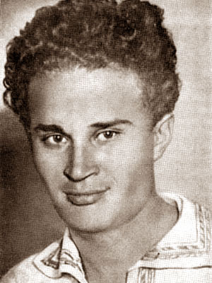
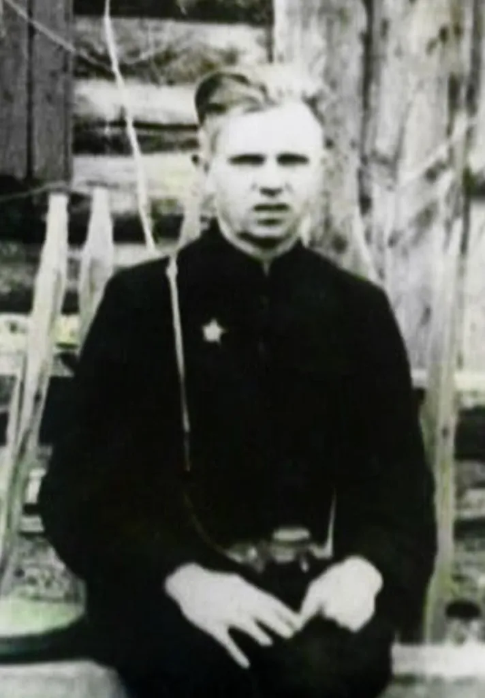
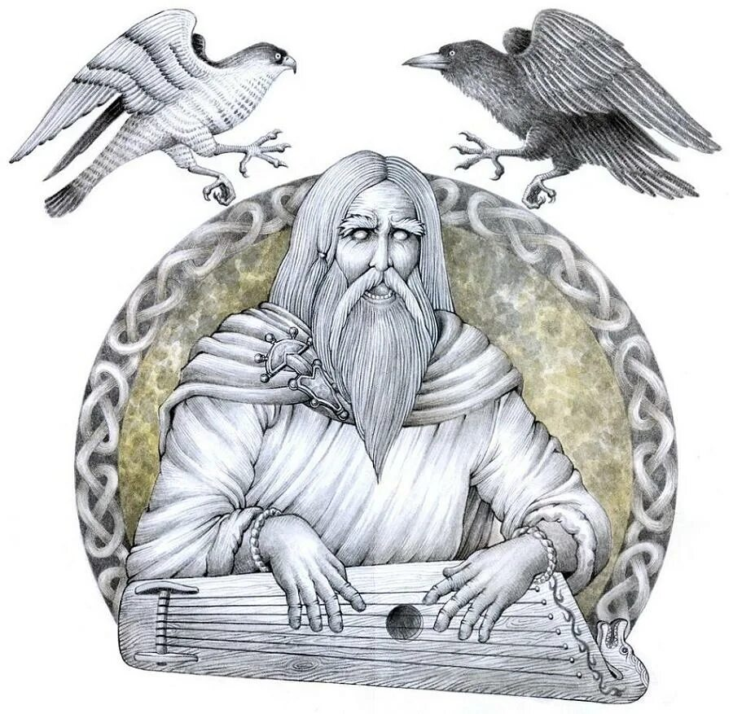

След на карте

📍 Старый Тарский тракт (Омская обл.)
⛪ Село Абалак (Тобольск)
🌲 Юганский заповедник (ХМАО)
🌾 Пойма Иртыша (Омск)
💧 Кондинские озера
«Путешествие по ландшафтам и культурным местам Обь-Иртышья»
Начать путь →Обь и Иртыш — главные реки Сибири. Ханты и манси веками жили на их берегах, русские переселенцы строили здесь первые остроги. Река кормила, поила, служила дорогой. Для многих она до сих пор — живое существо со своим характером.
Посмотришь вокруг: пойменные луга, таёжные урманы, бесконечные болота — и всё это Обь-Иртышский бассейн. Такие места редко где встретишь. Они не просто красивые — они сформировали свой уклад жизни, где коренные народы и русские первопроходцы научились жить рядом, перенимать друг у друга лучшее.
«Природа тут не фон, а то, что растит человека и держит общество».
Стихи сибирских поэтов читают студенты КИТЭК. Записи сделаны специально для проекта.

отрывок «Иртыш» читает Инга Унуковская

отрывок «Ой, ты Обь, река большая!» читает Руслан Шектыбаев

«Как Обь стала великой рекой»
«Где Обь с Иртышом в объятьях слились, А кедры и пихты их окружили, В холмах, где ветра со снегом сошлись, Встал город в тайге великой Сибири»